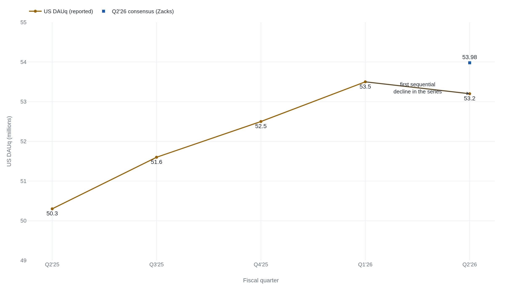
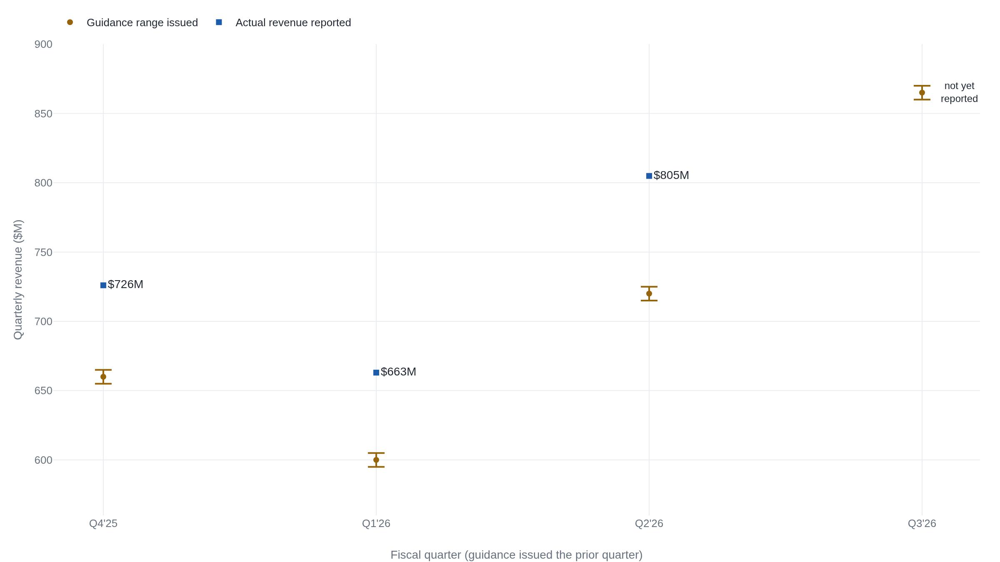
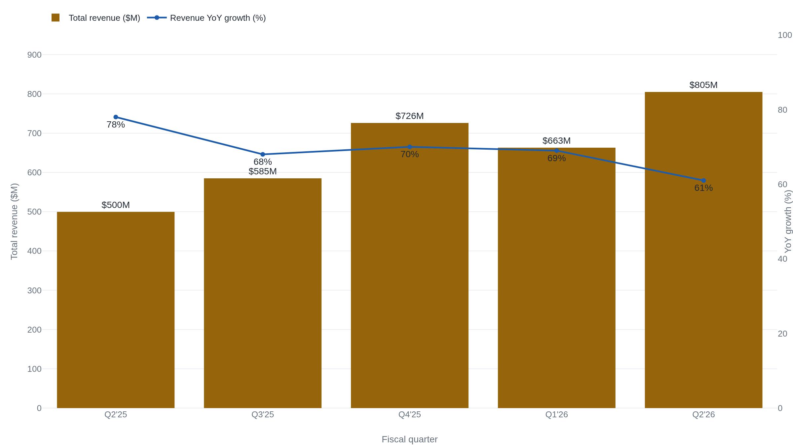

Reddit raised guidance and lost a fifth of its value in a day
Revenue jumped 61 percent and profit beat the Street, but US daily active users, the figure Reddit's valuation leans on, slipped from the prior quarter for the first time in five quarters as Google search referrals turned choppy.
The beat that cost a fifth of the company
After the close on July 30, 2026, Reddit reported a quarter that cleared almost every test a growth investor sets. Revenue reached $804.9 million, up 61 percent from a year earlier. GAAP diluted earnings were $1.25 a share, and the company guided the September quarter higher, to $860 to $870 million.1 The next full trading day the stock closed at $140.67, down from $178.04 the session before. That is a fall of 20.99 percent, about $37 a share in a single day.2
A beat that erases a fifth of a company's value reads as a contradiction only if a share price tracks what a company reported. It tracks what a company reported measured against what was already expected of it. Reddit is an advertising business built on a network of interest-based communities. It earns almost all of its money selling ads against the attention of its users. Its revenue is close to the product of two numbers: how many people show up, and how much each one is worth to advertisers.1 The first of those went the wrong way this quarter, and it went wrong against an expectation the headline hides.
US daily actives went the wrong way
Reddit reports daily active uniques, or DAUq: the average count of distinct logged-in and logged-out visitors per day over the quarter. Global DAUq grew to 130.3 million, up 18 percent, and landed in line with the 130.3 million analysts at Zacks had estimated.13 The United States is the number that matters most to the model. American users monetize at $11.85 each, roughly five times the $2.26 Reddit earns per international user, and the US supplies close to four-fifths of revenue.1
US DAUq came in at 53.2 million. That missed the 53.98 million Zacks consensus.3 More telling, it fell from the 53.5 million Reddit had reported three months earlier.14 It was the first sequential decline in the five quarters Reddit has shown, a run that had climbed from 50.3 million without a single step back.567

Management named a cause it does not control. In its Letter to Shareholders, Reddit wrote that search referrals from Google had been uneven and that traffic grew choppier as the quarter went on.8 Much of Reddit's reach comes from people who arrive on a search result, read one thread, and leave without signing in. The stickier core is smaller and barely moved: the same letter reported that US logged-in daily actives grew only about 1 percent from a year earlier, to 23.1 million.8 A quarter where the loyal base is flat and the borrowed traffic wobbles is a quarter about the durability of growth, not its level.
"Search referrals were choppy in the quarter, and traffic was more volatile later in the quarter, but the bigger picture is unchanged."8 Steven Huffman, President and CEO, Reddit Letter to Shareholders
A beat is scored against a moving bar
How does a company beat revenue by eight percent and lose a fifth of its value on the same news? Because the eight percent was already spent. Reddit's $804.9 million topped the $743.9 million Zacks had penciled in, a beat of 8.2 percent, and the $1.25 in earnings cleared the $0.99 estimate by a quarter.3 A buyer the day before the print was not paying for those numbers to arrive; the estimates already said they were coming. A buyer was paying for the growth story to hold, and the price embedded a US user base climbing toward the 53.98 million the Street expected.3 The 53.2 million that arrived did not clear that bar. It moved it.
| Measure | Reported | Consensus | Result |
|---|---|---|---|
| Revenue | 804.9 | 743.9 | Beat by 8.2% |
| GAAP EPS | 1.25 | 0.99 | Beat by $0.26 |
| Global DAUq | 130.3 | 130.3 | In line |
| US DAUq | 53.2 | 53.98 | Missed, and down from 53.5 |
| US ARPU | 11.85 | 10.38 | Beat by $1.47 |
What the market carries into a report is an extrapolation, and the input to Reddit's extrapolation is US users. Revenue can beat while user growth stalls, because the company is charging more for each user. US ARPU jumped 51 percent to $11.85, which is why the top line cleared its bar and the user count did not.1 But pricing has a ceiling that a growing audience does not, and a quarter that trades users for higher prices per user reads differently to someone underwriting years of compounding. Even the size of the beat was not fixed: data providers compile slightly different consensus numbers, so the 8.2 percent above holds against the Zacks bar and shrinks against a higher one.3
A beat is scored against expectations, and a price moves on the change in expectations, not the level of results.
The raise that still implied a slowdown
Reddit did raise the outlook, and the raise was real. The $860 to $870 million guided for the September quarter sits above what analysts had modeled, and above every prior quarter's actual result.19 Reddit has also cleared its own guidance by a wide margin. It guided this quarter to $715 to $725 million and delivered $804.9 million, about 12 percent above the midpoint.14

A guide the company routinely beats is not much of a surprise, which is part of why a higher number did not steady the stock. The raise also carries a warning if you read it as a growth rate rather than a dollar figure. The $865 million midpoint is about 48 percent above the $584.9 million Reddit earned in the September quarter a year ago.16 That would be the slowest year-over-year growth in the series, a step down from this quarter's 61 percent and from the 78 percent Reddit posted a year ago.5 A raise in dollars can still confirm a slowdown in the rate, and the rate is what a growth multiple is built to price.

Two ways to read a one-fifth day
Two readings of the sell-off are defensible. The first treats the drop as a rational re-rating. Reddit traded at a rich multiple that only a long runway of user growth could justify. The input to that runway just posted its first sequential decline, with an external cause, Google's search traffic, that the company cannot steer.8 When a price bakes in years of compounding, a small cut to the assumed growth rate takes a large bite out of the value. A 21 percent move on a genuine change to the growth signal is not obviously an overreaction. On this read the market did not punish a clean beat; it repriced a durability problem the beat was hiding.
The second read says the market overshot. International DAUq grew 28 percent to 77.1 million, weekly actives crossed half a billion, ARPU rose across every region, free cash flow reached $261 million, and net margin hit 31 percent.1 One soft quarter in US daily actives, which management tied to search volatility rather than a broken product, is a thin basis for erasing a fifth of the enterprise. Both readings fit the same facts because they weigh the same forward signal differently, and this quarter's tape will not settle which one is right.
What travels beyond Reddit is the arithmetic, not the verdict. The number that moves a stock on earnings day is the distance between what the company reported and what its price already assumed, and that distance lives in the forward signal, not the reported level. Reddit beat on the level the headline shows and missed on the input its valuation runs on. Run the same subtraction on the next company that falls on good news. Find the estimate the price was quietly carrying, then read the report for the line that changed it.
Sources
- SEC EDGAR · Reddit, Inc., Q2 2026 earnings press release (Form 8-K Exhibit 99.1)
- StockAnalysis · RDDT daily price history (NYSE closing prices)
- Yahoo Finance · Zacks, Reddit Q2 2026 key metrics vs consensus
- SEC EDGAR · Reddit, Inc., Q1 2026 earnings press release (Form 8-K Exhibit 99.1)
- SEC EDGAR · Reddit, Inc., Q2 2025 earnings press release (Form 8-K Exhibit 99.1)
- SEC EDGAR · Reddit, Inc., Q3 2025 earnings press release (Form 8-K Exhibit 99.1)
- SEC EDGAR · Reddit, Inc., Q4 2025 earnings press release (Form 8-K Exhibit 99.1)
- SEC EDGAR · Reddit, Inc., Q2 2026 Letter to Shareholders (Form 8-K Exhibit 99.2)
- The Motley Fool · Reddit beat on revenue, profit, and guidance; its US users are the worry